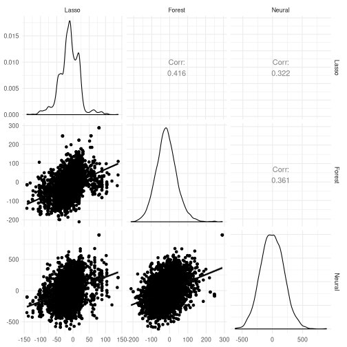
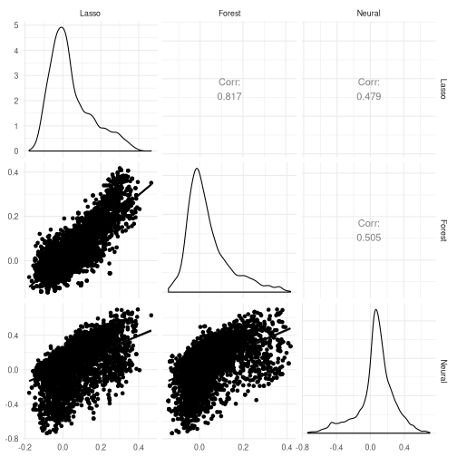
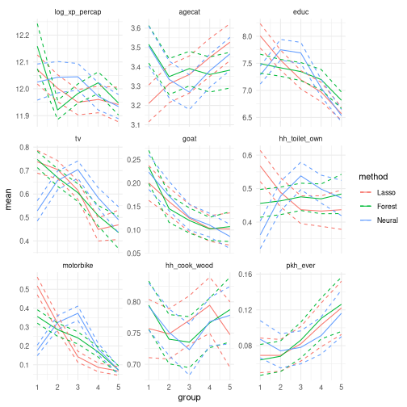

This work is licensed under a Creative Commons Attribution-ShareAlike 4.0 International License
Introduction¶
Background¶
-
Program Keluarga Harapan : pilot conditional cash transfer program in Indonesia
-
Conditional cash transfer: receive cash if
-
Expectant women: 4 prenatal visits, iron supplement, delivery by doctor or midwife, 2 postnatal visits
-
Children under 5: weighed monthly, vaccinated, vitamin A
-
-
Quarterly transfer of 600,000-2,200,000 rupiah (\$60 - \$220) depending on household composition (15-20% of quaterly consumption)
-
Randomized at subdistrict level : want to capture supply side effects that would occur if policy implemented everywhere
Baseline characteristics¶
if (!file.exists("Data_AEJPol-2014-0048/data_final/price_women.dta"))
{
stop("Please download the data from https://www.aeaweb.org/articles?id=10.1257/pol.20140048 and unzip it in the current directory")
}
if (!require(foreign)) install.packages("foreign")
library(foreign)
all.data <- read.dta("Data_AEJPol-2014-0048/data_final/price_women.dta")
# Variables we will use
vars <- c("rid_panel","prov","Location_ID","dist",
"wave",
"edu","agecat","log_xp_percap",#"hh_land","hh_home",
"rhr031", "rhr032", "rhr034", "rhr036",# "hh_xp",
"death_ch","bw","bw_low",
"birthfac", "good_assisted_delivery", "dummy_A", "dummy_B",
"dummy_D",
"delivery_fees", "delivery_fees_prof", "delivery_fees_doc",
"delivery_fees_midw", "delivery_fees_trad",
"control_pkh", "pkh_kec_ever", "pkh_ever", "bw_kec",
"bw_low_kec", "death_ch_kec",
"dummy_A_base", "dummy_B_base", "dummy_D_base",
"bid_pkh1", "bid_pkh1_base" ,
"delivery_fees_top", "delivery_fees_prof_top", "delivery_fees_doc_top",
"delivery_fees_midw_top", "delivery_fees_trad_top",
"delivery_fees_top_base", "delivery_fees_prof_top_base", "delivery_fees_doc_top_base",
"delivery_fees_midw_top_base",
"delivery_fees_trad_top_base", names(all.data)[grep("^hh_",names(all.data))],
"tv", "parabola" , "fridge" ,
"motorbike", "car" , "pig" ,
"goat" , "cow" , "horse"
)
pw <- all.data[,vars]
## Rename some variables
names(pw)[names(pw)=="dummy_A"] <- "doctor_birth"
names(pw)[names(pw)=="dummy_A_base"] <- "doctor_birth_base"
names(pw)[names(pw)=="dummy_B"] <- "midwife_birth"
names(pw)[names(pw)=="dummy_B_base"] <- "midwife_birth_base"
names(pw)[names(pw)=="dummy_D"] <- "traditional_birth"
names(pw)[names(pw)=="dummy_D_base"] <- "traditional_birth_base"
# Set household variables to their pretreatment (wave=1) values
for (v in c("edu","agecat","log_xp_percap",
"rhr031", "rhr032", "rhr034", "rhr036", names(pw)[grep("^hh_",names(pw))],
"tv","parabola","fridge","motorbike","car","pig","goat","cow","horse")) {
temp <- ifelse(pw$wave==1,pw[,v],NA)
temp0 <- ave(temp, pw$rid_panel, FUN=function(x) max(x,na.rm=TRUE))
pw[,v] <- ifelse(is.finite(temp0), temp0, pw[,v])
}
pw$delivery_fees_trad_top[is.na(pw$delivery_fees_trad_top)
&
!is.na(pw$delivery_fees_midw_top)] <- 0
adf <- aggregate(subset(pw,wave==1), by=list(subset(pw,wave==1)$control_pkh),
FUN=function(x) mean(x,na.rm=TRUE))
adf
## Group.1 rid_panel prov Location_ID dist wave edu agecat
## 1 0 NA NA NA NA 1 15.50180 3.405191
## 2 1 NA NA NA NA 1 14.59808 3.428927
## log_xp_percap rhr031 rhr032 rhr034 rhr036 death_ch
## 1 11.98384 0.3907714 0.5313627 0.4354722 0.4826965 0.01333814
## 2 12.00990 0.4068941 0.5458422 0.4427861 0.4765458 0.01137171
## bw bw_low birthfac good_assisted_delivery doctor_birth
## 1 3166.346 0.08163265 0.4353201 0.6392936 0.07902870
## 2 3180.763 0.07678883 0.4402434 0.6232073 0.08778792
## midwife_birth traditional_birth delivery_fees delivery_fees_prof
## 1 0.5876380 0.4189845 284483.6 243728.8
## 2 0.5619296 0.4315515 298738.9 256254.9
## delivery_fees_doc delivery_fees_midw delivery_fees_trad control_pkh
## 1 82076.82 178308.9 39173.57 0
## 2 102721.64 176275.7 40711.49 1
## pkh_kec_ever pkh_ever bw_kec bw_low_kec death_ch_kec doctor_birth_base
## 1 0 0 3165.103 0.08319263 0.01333814 0.07897035
## 2 0 0 3180.449 0.08287012 0.01137171 0.08718138
## midwife_birth_base traditional_birth_base bid_pkh1 bid_pkh1_base
## 1 0.5848753 0.4195088 3.574443e-02 3.574443e-02
## 2 0.5585186 0.4353818 -1.469066e-17 -2.999183e-18
## delivery_fees_top delivery_fees_prof_top delivery_fees_doc_top
## 1 274278.3 233523.5 64174.41
## 2 278295.7 235811.7 72279.24
## delivery_fees_midw_top delivery_fees_trad_top delivery_fees_top_base
## 1 167942.7 36862.44 273320.4
## 2 162837.3 37162.07 275470.0
## delivery_fees_prof_top_base delivery_fees_doc_top_base
## 1 232340.5 63631.20
## 2 232639.0 70302.13
## delivery_fees_midw_top_base delivery_fees_trad_top_base hh_serial_no_w1
## 1 166914.5 37767.86 2.898702
## 2 162082.5 38660.42 2.871713
## hh_survey_date_w1 hh_adult hh_5_15 hh_u5 hh_serial_no_w2
## 1 17368.93 3.426614 1.858130 1.631684 NaN
## 2 17367.48 3.363539 1.887016 1.638240 NaN
## hh_serial_no_w3 hh_u2 hh_3_6 hh_7_15 hh_phone hh_rf_tile
## 1 NaN 1.231982 1.496021 2.336163 0.1167988 0.7119683
## 2 NaN 1.232099 1.467532 2.340625 0.1122957 0.7157072
## hh_rf_shingle hh_rf_fiber hh_rf_oth hh_wall_plaster hh_wall_brick
## 1 0.2025955 0.1304975 0.04578226 0.3183129 0.1503244
## 2 0.1943852 0.1339730 0.04442075 0.3471926 0.1368159
## hh_wall_wood hh_wall_fiber hh_wall_oth hh_fl_tile hh_fl_plaster
## 1 0.2599135 0.3604903 0.03208363 0.2058399 0.3713050
## 2 0.2356077 0.3681592 0.03020611 0.2160625 0.3901919
## hh_fl_wood hh_fl_dirt hh_fl_oth hh_drink_pam hh_drink_mechwell
## 1 0.1398702 0.3738284 0.000000000 0.1528479 0.2025955
## 2 0.1346837 0.3471926 0.000355366 0.1464108 0.2174840
## hh_drink_well hh_drink_spring hh_drink_oth hh_drinkhome hh_drinkdist
## 1 0.4913482 0.1870944 0.08723864 0.2826244 1052.188
## 2 0.4626866 0.1915423 0.09985785 0.2782516 1064.803
## hh_waterdrink hh_water_pam hh_water_mechwell hh_water_well
## 1 0.8280461 0.1171593 0.2004326 0.4783706
## 2 0.8312011 0.1055437 0.2235252 0.4552239
## hh_water_spring hh_water_river hh_water_oth hh_waterhome hh_waterdist
## 1 0.1856525 0.09841384 0.04109589 0.05839942 610.1139
## 2 0.1847903 0.09630419 0.04157783 0.05934613 634.7447
## hh_toilet_own hh_toilet_pub hh_toilet_none hh_toilet_1 hh_toilet_2
## 1 0.4340303 0.1784427 0.4480894 0.2811824 0.1049027
## 2 0.4648188 0.1844350 0.4097370 0.3280028 0.1080313
## hh_toilet_3 hh_waste_tank hh_waste_hole hh_waste_river hh_waste_field
## 1 0.2505407 0.2606345 0.2487383 0.3695025 0.2119683
## 2 0.2313433 0.3120114 0.2341862 0.3454158 0.1968728
## hh_waste_oth hh_listrik hh_pln hh_kitchen hh_cook_wood
## 1 0 0.8601298 0.8417448 0.8936554 0.8136265
## 2 0 0.8681592 0.8464819 0.9033404 0.7782516
## hh_cook_kerosene hh_cook_gas hh_cook_oth hh_kec hh_land hh_home
## 1 0.2105263 0.03640952 0 9400.184 0.3734679 0.8846431
## 2 0.2469794 0.03375977 0 9618.802 0.3848614 0.8749112
## hh_land_miss hh_home_miss hh_xp hh_xp_all tv parabola
## 1 0 0.03028118 3.024874 2.601298 0.5313627 0.03893295
## 2 0 0.02949538 3.096304 2.676617 0.5458422 0.04015636
## fridge motorbike car pig goat cow horse
## 1 0.05803893 0.2011536 0.03496756 0.1196828 0.1456381 0.1121125 0.03640952
## 2 0.05685856 0.1986496 0.03269367 0.1364606 0.1552950 0.1186923 0.03802416
Main results¶
Delivery attendant usage¶
library(lfe)
lhs <- "pkh_kec_ever + doctor_birth_base + as.factor(edu) + as.factor(agecat) + log_xp_percap + hh_land + hh_home | dist | 0 | Location_ID"
itt <- list(felm(as.formula(paste("doctor_birth ~",lhs)),data=pw),
felm(as.formula(paste("midwife_birth ~",lhs)),data=pw),
felm(as.formula(paste("traditional_birth ~",lhs)),data=pw))
lhs <- "doctor_birth_base + as.factor(edu) + as.factor(agecat) + log_xp_percap + hh_land + hh_home | dist | (pkh_ever ~ pkh_kec_ever) | Location_ID"
iv <- list(felm(as.formula(paste("doctor_birth ~",lhs)),data=pw),
felm(as.formula(paste("midwife_birth ~",lhs)),data=pw),
felm(as.formula(paste("traditional_birth ~",lhs)),data=pw))
library(stargazer)
stargazer(itt, type="html",
title="ITT estimates", dep.var.labels =
c("Doctor","Midwife","Traditional"), keep="pkh",
omit.table.layout="n",omit.stat = c("rsq","adj.rsq","ser"))
| Dependent variable: | |||
| Doctor | Midwife | Traditional | |
| (1) | (2) | (3) | |
| pkh_kec_ever | 0.043*** | 0.094*** | -0.090*** |
| (0.012) | (0.017) | (0.016) | |
| Observations | 6,629 | 6,629 | 6,629 |
Delivery attendant usage [delivery-attendant-usage-1]¶
stargazer(iv, type="html",
title="IV effect of program participation", dep.var.labels =
c("Doctor","Midwife","Traditional"), keep="pkh",
omit.table.layout="n",omit.stat = c("rsq","adj.rsq","ser"))
| Dependent variable: | |||
| Doctor | Midwife | Traditional | |
| (1) | (2) | (3) | |
pkh_ever(fit)
|
0.091*** | 0.198*** | -0.189*** |
| (0.025) | (0.036) | (0.035) | |
| Observations | 6,629 | 6,629 | 6,629 |
Health outcomes¶
library(lfe)
lhs <- "pkh_kec_ever + doctor_birth_base + as.factor(edu) + as.factor(agecat) + log_xp_percap + hh_land + hh_home | dist | 0 | Location_ID"
itt <- list(felm(as.formula(paste("death_ch ~",lhs)),data=pw),
felm(as.formula(paste("bw ~",lhs)),data=pw),
felm(as.formula(paste("bw_low ~",lhs)),data=pw))
lhs <- "doctor_birth_base + as.factor(edu) + as.factor(agecat) + log_xp_percap + hh_land + hh_home | dist | (pkh_ever ~ pkh_kec_ever) | Location_ID"
iv <- list(felm(as.formula(paste("death_ch ~",lhs)),data=pw),
felm(as.formula(paste("bw ~",lhs)),data=pw),
felm(as.formula(paste("bw_low ~",lhs)),data=pw))
library(stargazer)
stargazer(itt, type="html",
title="ITT estimates", dep.var.labels =
c("Infant mortality","Birthweight","Low birthweight"), keep="pkh",
omit.table.layout="n",omit.stat = c("rsq","adj.rsq","ser"))
| Dependent variable: | |||
| Infant mortality | Birthweight | Low birthweight | |
| (1) | (2) | (3) | |
| pkh_kec_ever | 0.005 | -5.559 | 0.017 |
| (0.004) | (23.805) | (0.012) | |
| Observations | 8,303 | 4,988 | 4,988 |
Health outcomes [health-outcomes-1]¶
stargazer(iv, type="html",
title="IV effect of program participation", dep.var.labels =
c("Infant mortality","Birthweight","Lowbirthweigt"), keep="pkh",
omit.table.layout="n",omit.stat = c("rsq","adj.rsq","ser"))
| Dependent variable: | |||
| Infant mortality | Birthweight | Lowbirthweigt | |
| (1) | (2) | (3) | |
pkh_ever(fit)
|
0.011 | -12.674 | 0.039 |
| (0.008) | (54.269) | (0.026) | |
| Observations | 8,303 | 4,988 | 4,988 |
Exploring heterogeneity¶
Machine learning as proxy¶
-
Generic machine learning approach of Chernozhukov et al. (2018)
-
Estimate machine learning proxies for $B(x) = \Er[y(0)|x]$ and $S(x) = \Er[y(1) - y(0) |x]$
-
Use proxies to :
-
Estimate best linear projection on true $\Er[y(1) - y(0)|x]$
-
Estimate $\Er[y(1) - y(0) | groups]$
-
Heterogeneity in CATE for Birthweight¶
## Function for Generic machine learning of Chernozhukov, Demirer, Duflo, & Fernandez-Val (2018)
genericML <- function(x,y,treat, fit.function, predict.function,
n.split=10, n.group=5, clusterid=NULL) {
if (!is.null(clusterid)) require(sandwich)
blp <- matrix(NA, nrow=n.split, ncol=2)
blp.se <- blp
gate <- matrix(NA, nrow=n.split, ncol=n.group)
gate.se <- gate
baseline <- matrix(NA, nrow=nrow(x), ncol=n.split)
cate <- matrix(NA, nrow=nrow(x), ncol=n.split)
Lambda <- matrix(NA, nrow=n.split, ncol=2)
for(i in 1:n.split) {
main <- runif(nrow(x))>0.5
fit1 <- fit.function(x[!main & treat==1,], y[!main & treat==1])
fit0 <- fit.function(x[!main & treat==0,], y[!main & treat==0])
B <- as.vector(predict.function(fit0,x))
S <- as.vector(predict.function(fit1,x)) - B
baseline[,i] <- B
cate[,i] <- S
ES <- mean(S)
## BLP
# assume P(treat|x) = P(treat) = mean(treat)
p <- mean(treat)
df <- data.frame(y, B, treat, S, main)
reg <- lm(y ~ B + I(treat-p) + I((treat-p)*(S-ES)), data=subset(df, main))
blp[i,] <- reg$coef[3:4]
if (is.null(clusterid)) blp.se[i,] <- sqrt(diag(vcovHC(reg))[3:4])
else blp.se[i,] <- sqrt(diag(vcovCL(reg, clusterid[main]))[3:4])
Lambda[i,1] <- reg$coefficient[4]^2*var(S)
## GATES
cut <- quantile(S, probs=seq(0,1,length.out=(n.group+1)))
cut[n.group+1] <- cut[n.group+1] + 1
for(k in 1:n.group) {
df[,sprintf("G.%d",k)] <- (cut[k]<=S & S<cut[k+1])
}
greg <- lm(as.formula(paste(c("y ~ B ", sprintf("I((treat-p)*G.%d)",1:n.group)), collapse=" + ")),
data=subset(df,main))
gc <- grep("G", names(greg$coefficients))
gate[i,] <- greg$coefficients[gc]
if (is.null(clusterid)) gate.se[i,] <- sqrt(diag(vcovHC(greg))[gc])
else gate.se[i,] <- sqrt(diag(vcovCL(greg, clusterid[main]))[gc])
Lambda[i,2] <- sum(gate[i,]^2)/n.group
}
out <- list( gate=gate, gate.se=gate.se, blp=blp, blp.se=blp.se, Lambda=Lambda, baseline=baseline, cate=cate)
}
genericML.summary <- function(gml)
{
blp <- apply(gml$blp, 2, function(x) median(x, na.rm=TRUE))
blp.se <- apply(gml$blp.se, 2, function(x) median(x, na.rm=TRUE))
gate <- apply(gml$gate, 2, function(x) median(x, na.rm=TRUE))
gate.se <- apply(gml$gate.se, 2, function(x) median(x, na.rm=TRUE))
Lambda <- apply(gml$Lambda, 2, function(x) median(x, na.rm=TRUE))
return(list(blp=blp, blp.se=blp.se, gate=gate, gate.se=gate.se, Lambda=Lambda))
}
library(glmnet)
# create x matrix
fmla.l <- bw ~ pkh_kec_ever +
as.factor(edu)*as.factor(agecat) + log_xp_percap + hh_land + hh_home + as.factor(dist) +
hh_phone + hh_rf_tile + hh_rf_shingle + hh_rf_fiber +
hh_wall_plaster + hh_wall_brick + hh_wall_wood + hh_wall_fiber +
hh_fl_tile + hh_fl_plaster + hh_fl_wood + hh_fl_dirt +
hh_water_pam + hh_water_mechwell + hh_water_well + hh_water_spring + hh_water_river +
hh_waterhome +
hh_toilet_own + hh_toilet_pub + hh_toilet_none +
hh_waste_tank + hh_waste_hole + hh_waste_river + hh_waste_field +
hh_kitchen +
hh_cook_wood + hh_cook_kerosene + hh_cook_gas +
tv + fridge + motorbike + car + goat + cow + horse
m <- lm(fmla.l, data=pw, x=TRUE, y=TRUE)
treat <- m$x[,2]
Xl <- m$x[,3:ncol(m$x)]
scale <- sd(m$y)
center <- mean(m$y)
yl <- (m$y-center)/scale
lid <- as.factor(pw[as.numeric(rownames(m$x)),]$Location_ID)
gml.lasso <- genericML(Xl,m$y, treat,
function(x,y) cv.glmnet(x,(y-center)/scale,alpha=1,parallel=FALSE, intercept=TRUE, nfolds=20),
function(model, x) { predict(model, x, s=model$lambda.min, type="response")*scale + center },
n.split=11,n.group=5, clusterid=lid)
library(grf)
gml.rf <- genericML(Xl,m$y, treat,
function(x,y) regression_forest(x, (y-center)/scale, tune.parameters=TRUE),
function(model, x) { predict(model,x)$predictions*scale + center},
n.split=11,n.group=5, clusterid=lid)
library(RSNNS)
gml.nn <- genericML(Xl,m$y, treat,
function(x,y) mlp(x,(y-center)/scale,linOut=TRUE, size=c(10,10), learnFunc="SCG"),
function(model, x) { predict(model,x)*scale + center},
n.split=11,n.group=5, clusterid=lid)
library(GGally)
df <- data.frame(Lasso=apply(gml.lasso$cate,1,median),
Forest=apply(gml.rf$cate,1,median),
Neural=apply(gml.nn$cate,1,median))
ggpairs(df, lower=list(continuous="smooth")) + theme_minimal()

Best linear projection of CATE¶
-
Randomly partition sample into auxillary and main samples
-
Use any method on auxillary sample to estimate and
-
Use main sample to regress with weights $(P(x)(1-P(X)))^{-1}$
-
$\hat{\beta}0, \hat{\beta}_1 \to_p \argmin \Er[(s_0(x) - b_0 - b_1 (S(x)-E[S(x)]))^2]$
-
$\Lambda = \beta_1^2 Var(S(x)) = corr(s_0(x),S(X))^2 Var(s_0(x))$
library(kableExtra)
colfn <- function(gml) {
s <- genericML.summary(gml)
c(s$blp[1], s$blp.se[1], s$blp[2], s$blp.se[2], s$Lambda[1])
}
tbl <- cbind(colfn(gml.lasso), colfn(gml.rf), colfn(gml.nn))
colnames(tbl) <- c("Lasso","Regression forest","Neural network")
rownames(tbl) <- c("ATE=b0","se","b1","se","Lambda")
kable_styling(kable(tbl,
caption="Machine learning proxies as BLP of CATE on Birthweight",
format="html", digits=3),
bootstrap_options = c("striped", "hover", "condensed",
"responsive"), full_width=TRUE)
| Lasso | Regression forest | Neural network | |
|---|---|---|---|
| ATE=b0 | -11.381 | -1.751 | 6.185 |
| se | 31.414 | 32.285 | 32.309 |
| b1 | 0.371 | 0.369 | 0.044 |
| se | 0.547 | 0.491 | 0.115 |
| Lambda | 601.155 | 683.726 | 372.192 |
Group average treatment effects [group-average-treatment-effects]¶
-
Define $G_k = 1{\ell_{k-1} \leq S(x) \leq \ell_k}$ with $\ell_k = k/5$ quantile of $S(x)$
-
Use main sample to regress with weights $(P(x)(1-P(X)))^{-1}$
-
$\hat{\gamma}_k \to_p \Er[y(1) - y(0) | G_k]$
-
$\bar{\Lambda} = \frac{1}{K} \sum_k \gamma_k^2$
library(kableExtra)
colfn <- function(gml) {
s <- genericML.summary(gml)
c(s$gate[1], s$gate.se[1],
s$gate[2], s$gate.se[2],
s$gate[3], s$gate.se[3],
s$gate[4], s$gate.se[4],
s$gate[5], s$gate.se[5],
s$Lambda[2])
}
tbl <- cbind(colfn(gml.lasso), colfn(gml.rf), colfn(gml.nn))
colnames(tbl) <- c("Lasso","Regression forest","Neural network")
rownames(tbl) <- c(as.vector(sapply(1:5, function(x) c(sprintf("GATE %d",x),"se"))),"Lambda")
kable_styling(kable(tbl,
caption="GATE on Birthweight",
format="html", digits=3),
bootstrap_options = c("striped", "hover", "condensed",
"responsive"), full_width=TRUE)
| Lasso | Regression forest | Neural network | |
|---|---|---|---|
| GATE 1 | -48.985 | -3.950 | 19.586 |
| se | 69.276 | 69.646 | 62.126 |
| GATE 2 | 21.303 | -21.106 | -30.948 |
| se | 74.528 | 60.761 | 67.161 |
| GATE 3 | -9.369 | -44.090 | -11.807 |
| se | 65.917 | 66.654 | 66.981 |
| GATE 4 | 1.730 | 10.772 | -13.668 |
| se | 66.391 | 67.695 | 66.693 |
| GATE 5 | -22.329 | 5.736 | 52.466 |
| se | 66.335 | 77.828 | 77.496 |
| Lambda | 5998.909 | 4268.074 | 3912.912 |
Heterogeneity in CATE on Midwife utilization¶
# create x matrix
mwb <- pw[as.numeric(rownames(m$x)),]$midwife_birth
mw.lasso <- genericML(Xl,mwb, treat,
function(x,y) cv.glmnet(x,y,family="binomial",
alpha=1,parallel=FALSE, intercept=TRUE, nfolds=20),
function(model, x) { predict(model, x, s=model$lambda.min, type="response") },
n.split=11,n.group=5, clusterid=lid)
library(grf)
mw.rf <- genericML(Xl,mwb, treat,
function(x,y) regression_forest(x, y, tune.parameters=TRUE),
function(model, x) { predict(model,x)$predictions },
n.split=11,n.group=5, clusterid=lid)
library(RSNNS)
mw.nn <- genericML(Xl,mwb, treat,
function(x,y) mlp(x, y, linOut=FALSE, size=c(10,10), learnFunc="SCG"),
function(model, x) { predict(model,x) },
n.split=11,n.group=5, clusterid=lid)
library(GGally)
df <- data.frame(Lasso=apply(mw.lasso$cate,1,median),
Forest=apply(mw.rf$cate,1,median),
Neural=apply(mw.nn$cate,1,median))
ggpairs(df, lower=list(continuous="smooth")) + theme_minimal()

library(kableExtra)
colfn <- function(gml) {
s <- genericML.summary(gml)
c(s$blp[1], s$blp.se[1], s$blp[2], s$blp.se[2], s$Lambda[1])
}
tbl <- cbind(colfn(mw.lasso), colfn(mw.rf), colfn(mw.nn))
colnames(tbl) <- c("Lasso","Regression forest","Neural network")
rownames(tbl) <- c("ATE=b0","se","b1","se","Lambda")
kable_styling(kable(tbl,
caption="Machine learning proxies as BLP of CATE on Midwife Use",
format="html", digits=3),
bootstrap_options = c("striped", "hover", "condensed",
"responsive"), full_width=TRUE)
| Lasso | Regression forest | Neural network | |
|---|---|---|---|
| ATE=b0 | 0.048 | 0.056 | 0.043 |
| se | 0.023 | 0.023 | 0.024 |
| b1 | 0.466 | 0.625 | 0.207 |
| se | 0.189 | 0.240 | 0.089 |
| Lambda | 0.003 | 0.003 | 0.003 |
library(kableExtra)
colfn <- function(gml) {
s <- genericML.summary(gml)
c(s$gate[1], s$gate.se[1],
s$gate[2], s$gate.se[2],
s$gate[3], s$gate.se[3],
s$gate[4], s$gate.se[4],
s$gate[5], s$gate.se[5],
s$Lambda[2])
}
tbl <- cbind(colfn(mw.lasso), colfn(mw.rf), colfn(mw.nn))
colnames(tbl) <- c("Lasso","Regression forest","Neural network")
rownames(tbl) <- c(as.vector(sapply(1:5, function(x) c(sprintf("GATE %d",x),"se"))),"Lambda")
kable_styling(kable(tbl,
caption="GATE on Midwife Use",
format="html", digits=3),
bootstrap_options = c("striped", "hover", "condensed",
"responsive"), full_width=TRUE)
| Lasso | Regression forest | Neural network | |
|---|---|---|---|
| GATE 1 | -0.002 | 0.030 | -0.027 |
| se | 0.045 | 0.054 | 0.060 |
| GATE 2 | 0.017 | -0.024 | 0.035 |
| se | 0.050 | 0.054 | 0.052 |
| GATE 3 | 0.010 | 0.038 | 0.003 |
| se | 0.054 | 0.050 | 0.050 |
| GATE 4 | 0.089 | 0.080 | 0.058 |
| se | 0.053 | 0.046 | 0.050 |
| GATE 5 | 0.166 | 0.189 | 0.136 |
| se | 0.053 | 0.052 | 0.052 |
| Lambda | 0.007 | 0.011 | 0.006 |
Covariate means by group [covariate-means-by-group]¶
df <- pw[as.numeric(rownames(m$x)),]
df$edu99 <- df$edu==99
df$educ <- df$edu
df$educ[df$educ==99] <- NA
vars <- c("log_xp_percap","agecat","educ","tv","goat",
"hh_toilet_own","motorbike","hh_cook_wood","pkh_ever")
tmp <- data.frame()
groupMeans <- function(var, gml, clusterid) {
n.group <- ncol(gml$gate)
gate <- matrix(NA, nrow=nrow(gml$gate), ncol=ncol(gml$gate))
gate.se <- gate
dat <- data.frame(y=var)
for (i in 1:ncol(gml$cate)) {
S <- gml$cate[,i]
cut <- quantile(S, probs=seq(0,1,length.out=(n.group+1)))
cut[n.group+1] <- cut[n.group+1] + 1
for(k in 1:n.group) {
dat[,sprintf("G.%d",k)] <- 1*(cut[k]<=S & S<cut[k+1])
}
greg <- lm(as.formula(paste(c("y ~ -1", sprintf("G.%d",1:n.group)), collapse=" + ")),
data=dat)
gc <- grep("G", names(greg$coefficients))
gate[i,] <- greg$coefficients[gc]
if (is.null(clusterid)) gate.se[i,] <- sqrt(diag(vcovHC(greg))[gc])
else gate.se[i,] <- sqrt(diag(vcovCL(greg,clusterid))[gc])
}
return(list(mean=apply(gate, 2, function(x) median(x,na.rm=TRUE)),
se = apply(gate.se, 2, function(x) median(x,na.rm=TRUE))))
}
methods <- c("Lasso","Forest","Neural")
gmls <- list(mw.lasso,mw.rf,mw.nn)
for(v in vars) {
for (m in 1:length(methods)) {
gm <- groupMeans(df[,v], gmls[[m]], lid)
tmp <- rbind(tmp, data.frame(group=1:length(gm$mean),variable=v, method=methods[m],
mean=gm$mean, se=gm$se))
}
}
library(ggplot2)
fig <- ggplot(data=tmp, aes(x=group, y=mean, colour=method)) +
geom_line() +
geom_line(aes(y=(mean+1.96*se), colour=method), linetype=2) +
geom_line(aes(y=(mean-1.96*se), colour=method), linetype=2) +
facet_wrap(~ variable,scales="free_y") + theme_minimal()
print(fig)

References¶
Alatas, Vivi, Nur Cahyadi, Elisabeth Ekasari, Sarah Harmoun, Budi Hidayat, Edgar Janz, Jon Jellema, H Tuhiman, and M Wai-Poi. 2011. “Program Keluarga Harapan : Impact Evaluation of Indonesia’s Pilot Household Conditional Cash Transfer Program.” World Bank. http://documents.worldbank.org/curated/en/589171468266179965/Program-Keluarga-Harapan-impact-evaluation-of-Indonesias-Pilot-Household-Conditional-Cash-Transfer-Program.
Chernozhukov, Victor, Mert Demirer, Esther Duflo, and Iván Fernández-Val. 2018. “Generic Machine Learning Inference on Heterogenous Treatment Effects in Randomized Experimentsxo.” Working Paper 24678. Working Paper Series. National Bureau of Economic Research. https://doi.org/10.3386/w24678.
Triyana, Margaret. 2016. “Do Health Care Providers Respond to Demand-Side Incentives? Evidence from Indonesia.” American Economic Journal: Economic Policy 8 (4): 255–88. https://doi.org/10.1257/pol.20140048.